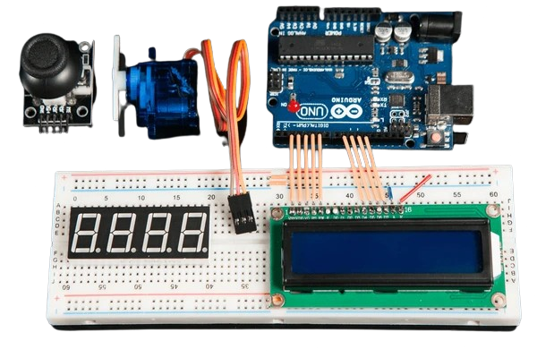

Proyectos de Electrónica y Programación Educativa
Desarrollamos proyectos tecnológicos a pedido para estudiantes de colegios y universidades. Nos enfocamos en electrónica, programación y robótica, ofreciendo soluciones prácticas y adaptadas a las necesidades académicas.

Arduino y Microcontroladores
Prototipos con sensores y actuadores para proyectos prácticos.
Robótica
Diseño de robots autónomos para ferias de ciencia y competencias.
Programación
Desarrollo de software en Python, C++ o Java adaptado a cada necesidad.